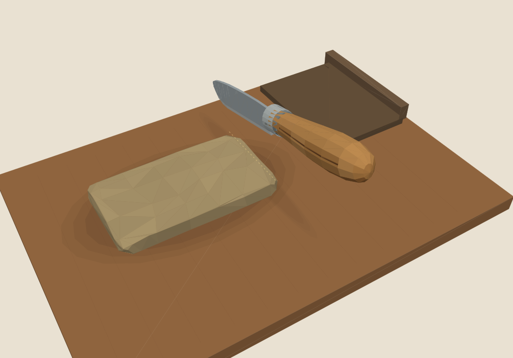
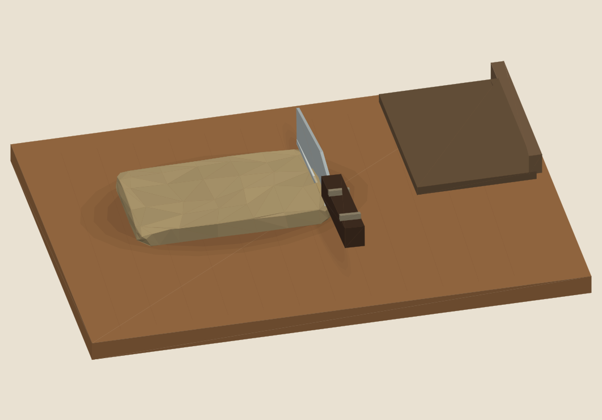
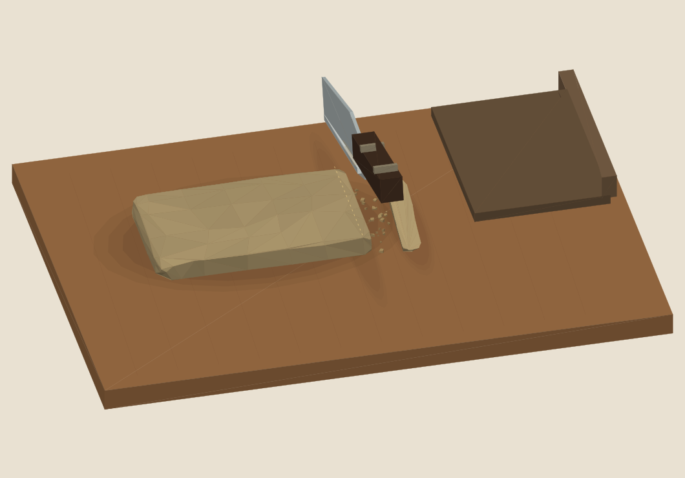
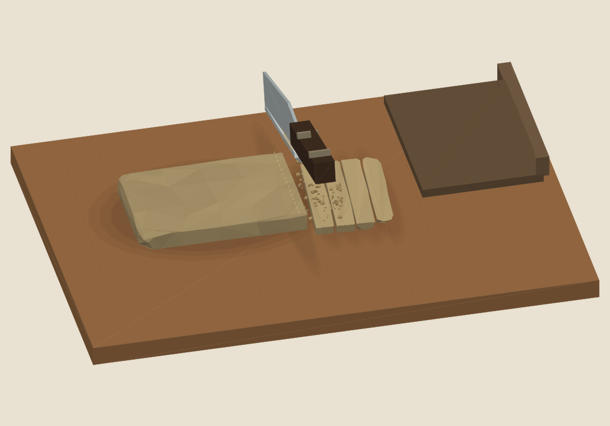

Vue FPS
Une perspective depuis la place du joueur devant la planche. Les objets proches prennent davantage de place dans l’image.
Un grand couteau de poche et une vue depuis le joueur, réglable pour observer la coupe.
La V03 propose un couteau low poly à manche de bois arrondi, virole métallique et lame courbe, inspiré d’un grand Opinel. La vue FPS en perspective devient le point de départ ; l’ancienne vue Atelier reste accessible. Les gestes, effets, sons et miettes développés en V02 sont conservés.
Une perspective depuis la place du joueur devant la planche. Les objets proches prennent davantage de place dans l’image.
La vue orthographique de V02, conservée pour comparer le geste et retrouver le cadrage précédent.
Une vue réglable pour examiner la lame, le pain et les portions depuis un autre angle.
Dans le menu de caméra, choisis Vue FPS / Atelier · V02 / Vue libre. Les curseurs Orientation et Inclinaison, ainsi que les boutons − / + de proximité, permettent d’adapter le cadrage.
Regarder réserve le glissement du doigt ou du pointeur à la caméra et empêche de couper pendant la navigation. Reviens à Manipuler pour couper, pousser et balayer. L’icône Recadrer rétablit la caméra sans recommencer la matière ni les portions.
Une coupe demande 0,65 seconde simulée. Un maintien produit une seule portion. Relâcher avant validation annule sans retirer de matière. Le ralenti change la vitesse d’observation, pas la quantité coupée.
Le modèle de la démo propose une lame d’environ 12 cm. Son encombrement ouvert est mesuré à 27 cm de longueur et 3,2 cm de largeur. Le bois arrondi, la virole métallique et la lame courbe sont traités en facettes low poly. Ces proportions sont stylisées librement ; elles ne constituent pas une reproduction exacte du produit réel.
L’inspiration est le N°12 : sa fiche décrit une lame de 12 cm au profil Yatagan, un manche en hêtre et une bague métallique de sécurité. Source officielle : Opinel N°12 inox, consultée le 5 novembre 2026. Les dimensions du manche du modèle de la démo restent un choix de présentation.

Lame, manche et virole bougent ensemble. Le petit contact et la poussière localisée commencent au toucher réel, sans frottement préalable.
Le mouvement tire et bascule sous charge. La compression reste proche de la coupe, avec un sillon, une friction granulaire, puis des microcraquements et des éclats.
La vraie tranche se sépare et bascule sur la planche. Son arrivée possède un son distinct. La lame remonte avec un recul amorti ; des grains se détachent de son bas.

Les miettes ont plusieurs tailles : elles rebondissent, roulent et restent 35 à 50 secondes simulées, dans une limite de 230 particules. La poussière disparaît plus vite. Leurs appuis suivent le pain et les barrettes ; si un appui disparaît, elles reprennent leur chute. Le balayage à la lame déplace celles qui reposent sur une surface.
La face fraîche, le sillon et les traces de lame sont des propositions visuelles désactivables séparément. Le micro-mouvement de caméra reste désactivé par défaut. Les miettes sont décoratives : elles n’ajoutent aucune perte de grammes.
Une friction continue accompagne l’effort. Six événements complètent le son : contact, cession, retombée, miettes, raclement de poussée ou rangement, interruption. La cession mêle deux ou trois microcraquements à un choc très court sur la planche. Le niveau est réglable, comprimé et limité ; les sons varient par geste et les voix sont nettoyées après lecture.
Le son reste une proposition de synthèse à écouter. Il n’a pas reçu de validation d’écoute humaine et ne constitue pas les assets audio définitifs.

Retenue courte, coupe nette, craquement plus clair et davantage de petits éclats.
Charge marquée, cession mate et barrette qui retombe avec du poids.
Coupe tirée plus progressive, relâchement amorti et son plus sourd.
Aucun profil n’est déclaré validé. Les six matières A–F restent indépendantes de la résistance : leur couleur ne détermine aucune variété, puissance ou propriété réelle. Pour comparer, garde la même matière et change un réglage à la fois.
Choisis une source de 100 ou 250 g et des portions de 4 ou 8 g. Chaque morceau conserve son identité, sa masse et ses paramètres de coupe. La planche accepte 50 portions préparées ; le rangement permet de poursuivre. Choisir une nouvelle source démarre explicitement un nouvel essai ; réinitialiser la caméra ne le fait pas.
Une source de 250 g découpée en portions de 8 g conserve 31 barrettes, soit 248 g, et un reliquat de 2 g. Les masses restent des métadonnées du jeu, sans densité déduite du volume. Les effets, le son et le changement de caméra ne pilotent pas le registre.
Les deux sources GLB réelles, à 310 triangles chacune, restent les modèles de matière utilisés. La coupe utilise leurs triangles et ferme les sections. Les textures 2K ne sont pas embarquées dans cette étude légère ; les familles de matières sont traduites en couleurs et en facettes. Les sources publiées de matière et les cinq modules JavaScript de base sont vérifiés identiques. La V03 porte sur la présentation et la caméra, pas sur une nouvelle génération des sources.

V03 : 44 contrôles de base et 26 contrôles de parcours/dessin réussis. Les 26 comprennent les 20 parcours précédents réexécutés et six nouveaux contrôles de caméra. Ces vérifications sont automatisées hors navigateur.
Les contrôles caméra passent également 867 cas de projection, projection inverse et découpage à la limite du champ. Le couteau comporte 766 triangles, neuf pièces et sept composants fermés ; le fil a été contrôlé sur 41 échantillons. Ces mesures décrivent le modèle et ses contrôles, sans validation de confort ou de ressenti.
Ces contrôles V02 couvrent notamment conservation, refus sans mutation, identités, sections fermées, poses finies et nettoyage des voix. Sept vues calculées ont été examinées, l’archive relue et les empreintes vérifiées. Le registre, la géométrie et les sources de V02 étaient identiques à la V01.
La relecture V02 a fait corriger les miettes suspendues après perte d’appui, le contact sonore trop précoce, le rangement immédiat figeant une portion debout et le mauvais raccord sonore du profil Souple. Les corrections ont été contrôlées à nouveau.
Un parcours automatisé dans un navigateur a ensuite effectué une coupe sur V02. Ce contrôle porte sur la version publiée précédente. Il ne constitue ni un essai humain, ni une validation du ressenti, ni un résultat pour V03.
Les contrôles chiffrés ci-dessus sont exécutés hors navigateur. Ils ne constituent pas une validation tactile humaine. Les tests audio vérifient les échantillons et un graphe Web Audio simulé ; ils ne remplacent pas l’écoute humaine. La fluidité sur téléphone et le confort sonore de V03 restent à éprouver. Les contacts sont simplifiés : ce n’est ni PhysX ni une simulation de matière déformable.
Aucun code ou build Unity n’est modifié par cette étude. Le rangement et le choix d’une nouvelle source restent des commandes de démonstration. Le plaisir du geste, le confort de la vue FPS et l’adéquation du couteau restent à juger par l’essai.